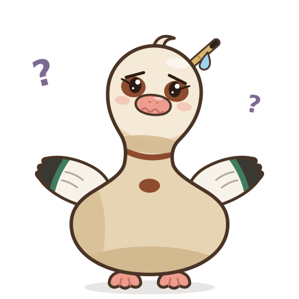

プロフィールProfileProfil
…
プロフィールを表示するにはログインしてください。ログインすると、表示名の変更、投稿の確認と修正、ブックマーク、運営へのバグの報告や応援メッセージの送信ができます。Please sign in to see your profile. Once signed in you can change your display name, review and edit your contributions, keep bookmarks, and send bug reports or messages of support to the editors.Connectez-vous pour afficher votre profil. Vous pourrez alors modifier votre nom affiché, consulter et corriger vos contributions, gérer vos marque-pages et envoyer à l’équipe un signalement de bogue ou un message d’encouragement.
ログイン機能は現在ご利用いただけません。Sign-in is not available at the moment.La connexion n’est pas disponible pour le moment.
⚑ デモモード（この端末内だけに保存）Demo mode (stored on this device only)Mode démo (stocké sur cet appareil)
I表示名Display nameNom affiché
公開された投稿には、この表示名が添えられます。変更すると、これまでの投稿の表示名も新しい名前に変わります。メールアドレスが公開されることはありません。Published contributions carry this name. If you change it, the name shown on your earlier contributions changes too. Your e-mail address is never published.Ce nom accompagne vos contributions publiées. Si vous le modifiez, il est aussi mis à jour sur vos contributions antérieures. Votre adresse e-mail n’est jamais publiée.
II投稿ContributionsContributions
あなたが送ったコメント・注釈・誤りの指摘の状況を確認し、内容を修正できます。公開済みの投稿を修正したときは、運営が確認するまで、現在の内容がそのまま公開されます。Check the status of the comments, annotations and corrections you have sent, and edit them. When you edit a published contribution, the current text stays online until the editors have reviewed your changes.Suivez l’état de vos commentaires, annotations et corrections, et modifiez-les. Lorsque vous modifiez une contribution publiée, le texte actuel reste en ligne jusqu’à la relecture de vos changements.
IIIブックマークBookmarksMarque-pages
本文のビュワーで、各セグメントの〈☆ ブックマーク〉または文書メニューの〈ブックマーク〉を押すと、ここに追加されます。ブックマークとメモは、あなただけが見られます。In a text viewer, press “☆ Bookmark” on a segment, or “Bookmark” in the document menu, to add it here. Only you can see your bookmarks and notes.Dans une visionneuse, cliquez sur « ☆ Marque-page » sous un segment, ou sur « Marque-page » dans le menu du document, pour l’ajouter ici. Vous seul·e voyez vos marque-pages et vos notes.
IVバグの報告Report a bugSignaler un bogue

表示の崩れ、動かないボタン、データが読み込めないなど、サイトの不具合を運営に知らせることができます。本文・語釈・訳の誤りについては、ビュワーの〈誤りの指摘〉からお寄せください。Tell the editors about problems with the site: broken layout, buttons that do nothing, data that fails to load. For mistakes in the text, glosses or translations, please use “Correction” in a viewer.Signalez à l’équipe les problèmes du site : affichage cassé, boutons inactifs, données qui ne se chargent pas. Pour les erreurs dans le texte, les gloses ou les traductions, utilisez « Correction » dans une visionneuse.
送信した報告Reports you have sentVos signalements
V応援メッセージMessage of supportMessage d’encouragement
感想や励ましのことばを運営に送ることができます。いただいたメッセージは運営だけが読み、サイトに公開されることはありません。Send the editors your impressions or a word of encouragement. Messages are read only by the editors and are never published on the site.Envoyez à l’équipe vos impressions ou un mot d’encouragement. Les messages ne sont lus que par l’équipe et ne sont jamais publiés sur le site.